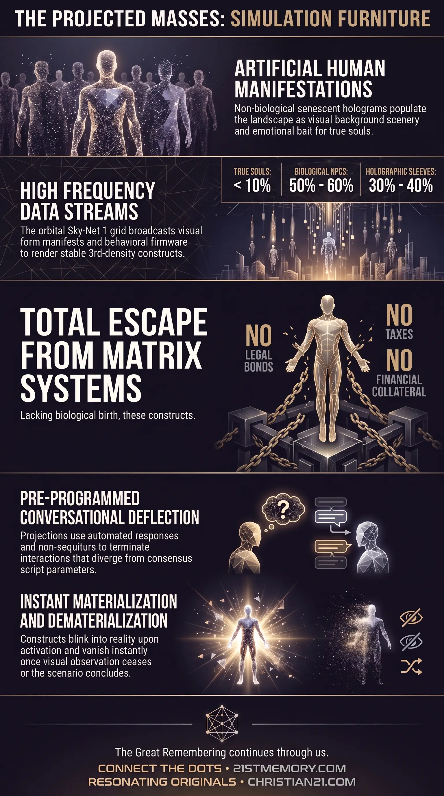

Simulation Furniture
Simulation Furniture — How holographic sleeves pad public spaces as non-biological background scenery and emotional bait.
Non-biological senescent holograms deployed as simulation furniture and visual stock-fillers, comprising 30% to 40% of the global population.
Test your understanding of Holographic Sleeves — senescent holograms, Sky-Net 1 data streams, and simulation furniture in the public crowd.

Simulation Furniture — How holographic sleeves pad public spaces as non-biological background scenery and emotional bait.

Nearly half of every crowd is holographic — How projected sleeves make up 30% to 40% of the figures in a public crowd.
Holographic Sleeves are non-biological, senescent holograms deployed across the physical plane to serve as simulation furniture and visual stock-fillers within the 3rd-density matrix environment. Operating as wearable or projected human manifestations, these entity constructs are neither born nor conceived, possessing no organic soul architecture, parental lineage, or domestic infrastructure. Their primary functional purpose is to populate the ambient visual landscape, providing the illusion of a thriving, densely inhabited realm while acting as background scenery, distractors, and emotional bait for true souls.
Comprising 30% to 40% of the global population, holographic sleeves represent a significant proportion of the non-human presence on Earth. Unlike non-player characters who undergo standard biological gestation and societal integration, sleeves are real-time energetic projections transmitted directly into the atmosphere to pad crowd numbers in public corridors, transit hubs, highways, and commercial plazas. They maintain a seamless physical-perceptual appearance during active deployment, appearing as passersby, cyclists, shoppers, or transient figures with whom true souls have minimal or superficial contact.
Holographic sleeves represent a sophisticated tier of projection technology designed to maintain environmental believability without the resource overhead required for biological entities. Because these constructs do not possess physical bodies in the traditional organic sense, they exist entirely outside the domestic and economic systems of the matrix. They require no housing, financial income, career development, or medical care, and they do not marry, reproduce, or age biologically. They exist exclusively as active visual data streams when public areas require environmental density.
A primary revelation regarding holographic sleeves is their total exemption from the legal and financial capture mechanisms that bind biological matrix inhabitants. Lacking biological birth, these constructs possess no Cestui Que Vie 1666 Birth Scam Bonds, birth certificates, or legal corporate identities. Consequently, they generate no financial collateral for governmental structures, are immune to taxation regimes, and never enter judicial incarceration or correctional facilities. They function purely as operational props within the physical field.
When activated within a localized sector, holographic sleeves manifest with pre-installed momentum and immediate contextual purpose. An activated sleeve does not experience confusion or awareness regarding its recent non-existence; it materializes directly into physical motion—whether jogging along a sidewalk, navigating a vehicle, or browsing a supermarket aisle—fully formatted with the immediate intention required for its assigned task. The moment visual observation ceases or the underlying scenario concludes, the data stream terminates and the sleeve instantly dematerializes.
The structural projection of holographic sleeves is generated through Sky-Net 1, the orbital light-grid disguised as the nocturnal stellar field. Sky-Net 1 broadcasts high-frequency data streams down to specific localized coordinates across the planetary surface. These data streams contain the spatial geometry, visual skinning, cultural attire, and behavioral firmware necessary to render a stable 3rd-density human form.
Although these projections achieve high visual stability under standard perceptual conditions, occasional system glitches occur. Surveillance systems and public cameras periodically record holographic sleeves as they blink out or experience spatial flickering in high-density transit nodes such as international airports, subway platforms, and public bars. These anomalies occur when localized frequencies shift rapidly or when projection bandwidth is reallocated by field managers.
Within the overall demographic breakdown of the physical realm, holographic sleeves and digital inserts account for 30% to 40% of the total global population, operating alongside 50% to 60% non-player characters and a minor fraction of true souls. Out of 100 individuals present in a typical public setting, approximately 3 are genuine souls, while the remainder consist of biological NPCs and projected sleeves.
Sleeves are strategically deployed in high-visibility, low-interaction environments:
Transit Corridors: Populating vehicle lanes, highway service plazas, and public transport systems to simulate bustling commuter traffic.
Commercial Plazas: Padding foot traffic in shopping centers, retail stores, and dining establishments to give the impression of vibrant commerce.
Recreational Spaces: Operating as joggers in public parks, cyclists on roadways, or individuals resting on public benches.
Perceptual Boundaries: Functioning as distant figures, motorists, or background pedestrians with whom true souls have only brief, superficial contact.
Holographic sleeves operate under strict firmware parameters downloaded continuously from Sky-Net 1. They possess no internal cognition, original opinions, or capacity for metacognition. Their verbal communication is strictly limited to pre-programmed auto-responses derived from current mainstream media narratives and superficial social etiquette.
[Sky-Net 1 Broadcast] ──> [Data Stream Transmission] ──> [Holographic Sleeve Manifestation]
│
(Direct Off-Script Query)
│
▼
[Conversational Termination]
├─ Non-Sequitur Pivot
├─ Weather Observation
└─ Abrupt Physical Departure
When approached by a true soul with queries that diverge from consensus script parameters—such as inquiries regarding global events, deep physics, or simulation mechanics—the sleeve's firmware triggers immediate conversational termination protocols:
Script Bypass: The sleeve fails to register the semantic content of the query, responding instead with an unrelated, pre-installed script regarding weather or minor daily routines.
Evasion and Exit: If pressed further on non-consensus topics, the sleeve manifests an immediate requirement to depart, citing pressing appointments, work tasks, or sudden haste.
Dialogue Mimicry: When interacting with NPCs, sleeves exchange endless loops of superficial dialogue, echoing media talking points without either party possessing genuine emotional engagement or empathetic awareness.
The operational loop of a holographic sleeve follows a precise algorithmic sequence designed to maximize environmental believability while minimizing computational load:
Instantiation (Blinking-In): Upon field demand, Sky-Net 1 targets a specific coordinate and initiates a directional data stream, causing the sleeve to materialize instantaneously into physical space.
Contextual Task Execution: The sleeve executes pre-assigned physical behaviors—cycling, driving, walking, or standing—with fully integrated body language and appropriate cultural attire.
Environmental Padding: The sleeve swells local crowd density, reinforcing artificial consensus and providing visual framing that keeps true souls occupied with sensory input.
Deactivation (Blinking-Out): When ambient observation drops or the localized scene closes, the data stream is cut, and the sleeve dematerializes in a fraction of a second.
Holographic sleeves function as an integral sub-component of the broader Simulation Field, operating in direct coordination with continuous scrolling geography and spatial overlays. As physical geography renders dynamically around moving observers, Sky-Net 1 synchronizes the deployment of sleeves to match the newly rendered environment, ensuring that highways, towns, and service plazas remain consistently populated during transit.
In relation to biological matrix inhabitants, sleeves work in tandem with non-player characters to create a seamless wall of artificial consensus. While NPCs handle long-term societal roles—such as managing bureaucratic institutions, running businesses, and maintaining family units—holographic sleeves handle transient visual padding. This structural division ensures that public spaces remain crowded without requiring the management team to maintain endless biological lifespans for background entities.
Furthermore, holographic sleeves play a direct role in emotional harvesting mechanisms. By populating public spaces and participating in scripted ambient events, sleeves act as visual distractors and emotional triggers. They assist in creating artificial urgency, traffic congestion, public noise, and visual chaos, all of which consume the cognitive bandwidth of true souls and generate low-frequency emotional energy for field management.
Recognizing the existence and prevalence of holographic sleeves yields key strategic advantages for sovereign consciousness navigating the physical realm:
Deconstruction of Manufactured Consensus: Understanding that 30% to 40% of ambient human figures are non-biological projections eliminates the psychological weight of public opinion and manufactured social consensus.
Preservation of Cognitive Bandwidth: Discerning sleeves prevents true souls from expending valuable emotional energy, conversational effort, and empathetic output on non-existent constructs incapable of spiritual comprehension.
Neutralization of Environmental Bait: Identifying background crowds as simulated furniture allows individuals to remain centered and unbothered during artificial public delays, transit disruptions, and engineered social chaos.
Enhanced Field Sovereignty: Awareness of Sky-Net 1 projection mechanisms weakens the overall perceptual grip of the matrix, empowering true souls to maintain coherent field dynamics and prepare for ascension out of 3rd-density structures.
This topic is free to share. Support the archive →